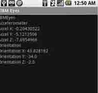

Android 开发中传感器使用实例
样例应用程序仅监控对方向和加速表传感器的更改。当我们收到更改时，传感器值在 TextView 小部件的屏幕上显示。图 1 展示了该应用程序的运行情况。

图1. 监视加速和方向
使用Eclipse环境和Android Developer Tools插件创建的应用程序。
IBMEyes.java
import android.app.Activity;import android.os.Bundle;
import android.util.Log;
import android.widget.TextView;
import android.hardware.SensorManager;
import android.hardware.SensorListener;
public class IBMEyes extends Activity implements SensorListener {
final String tag = "IBMEyes";
SensorManager sm = null;
TextView xViewA = null;
TextView yViewA = null;
TextView zViewA = null;
TextView xViewO = null;
TextView yViewO = null;
TextView zViewO = null;
/** Called when the activity is first created. */
public void onCreate(Bundle savedInstanceState) {
super.onCreate(savedInstanceState);
// get reference to SensorManager sm = (SensorManager)
// getSystemService(SENSOR_SERVICE); setContentView(R.layout.main);
xViewA = (TextView) findViewById(R.id.xbox);
yViewA = (TextView) findViewById(R.id.ybox);
zViewA = (TextView) findViewById(R.id.zbox);
xViewO = (TextView) findViewById(R.id.xboxo);
yViewO = (TextView) findViewById(R.id.yboxo);
zViewO = (TextView) findViewById(R.id.zboxo);
}
public void onSensorChanged(int sensor, float[] values) {
synchronized (this) {
Log.d(tag, "onSensorChanged: " + sensor + ", x: " + values[0]
+ ", y: " + values[1] + ", z: " + values[2]);
if (sensor == SensorManager.SENSOR_ORIENTATION) {
xViewO.setText("Orientation X: " + values[0]);
yViewO.setText("Orientation Y: " + values[1]);
zViewO.setText("Orientation Z: " + values[2]);
}
if (sensor == SensorManager.SENSOR_ACCELEROMETER) {
xViewA.setText("Accel X: " + values[0]);
yViewA.setText("Accel Y: " + values[1]);
zViewA.setText("Accel Z: " + values[2]);
}
}
}
public void onAccuracyChanged(int sensor, int accuracy) {
Log.d(tag, "onAccuracyChanged: " + sensor + ", accuracy: " + accuracy);
}
protected void onResume() {
super.onResume();
// register this class as a listener for the orientation and
// accelerometer sensors sm.registerListener(this,
// SensorManager.SENSOR_ORIENTATION |SensorManager.SENSOR_ACCELEROMETER,
// SensorManager.SENSOR_DELAY_NORMAL);
}
protected void onStop() {
// unregister listener
sm.unregisterListener(this);
super.onStop();
}
}
编写应用程序必须基于常见的活动，因为它只是利用从传感器获取的数据更新屏幕。在设备可能在前台执行其他活动的应用程序中，将应用程序构建为服务可能更加合适。
该活动的onCreate方法可以引用SensorManager，其中包含所有与传感器有关的函数。onCreate方法还建立了对6个TextView小部件的引用，您需要使用传感器数据值更新这些小部件。
onResume()方法使用对SensorManager的引用通过registerListener方法注册传感器更新：
第一个参数是实现 SensorListener 接口的类的实例。
第二个参数是所需传感器的位掩码。在本例中，应用程序从SENSOR_ORIENTATION和SENSOR_ACCELEROMETER请求数据。
第三个参数是一个系统提示，指出应用程序更新传感器值所需的速度。
应用程序(活动)暂停后，需要注销侦听器，这样以后就不会再收到传感器更新。这通过SensorManager的unregisterListener方法实现。惟一的参数是SensorListener的实例。
在registerListener和unregisterListener方法调用中，应用程序使用关键字this。注意类定义中的implements关键字，其中声明了该类实现SensorListener接口。这就是要将它传递到 registerListener 和 unregisterListener 的原因。
SensorListener必须实现两个方法onSensorChange和onAccuracyChanged。示例应用程序不关心传感器的准确度，但关注传感器当前的X、Y和Z值。onAccuracyChanged 方法实质上不执行任何操作;它只在每次调用时添加一个日志项。
似乎经常需要调用onSensorChanged，方法：因为加速表和方向传感器正在快速发送数据。查看第一个参数确定哪个传感器在发送数据。确认了发送数据的传感器之后，将使用方法第二个参数传递的浮点值数组中所包含的数据更新相应的UI元素。该示例只是显示这些值，但在更加高级的应用程序中，还可以分析这些值，比较原来的值，或者设置某种模式识别算法来确定用户(或外部环境)的行为。